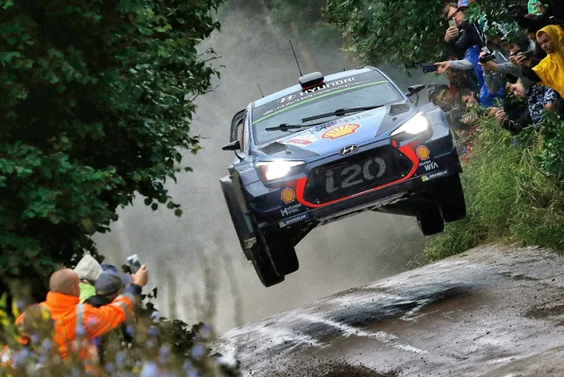
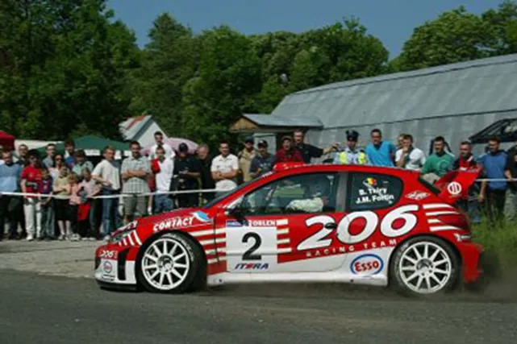
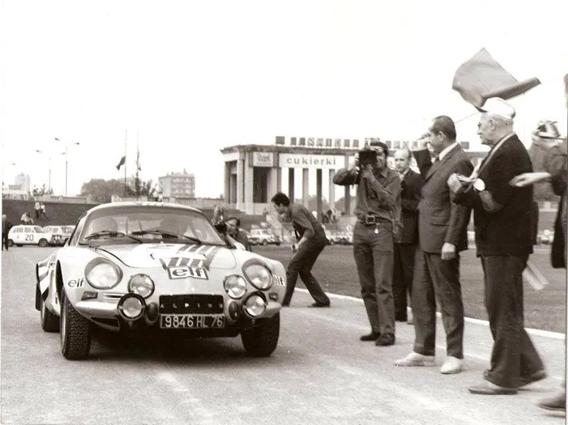
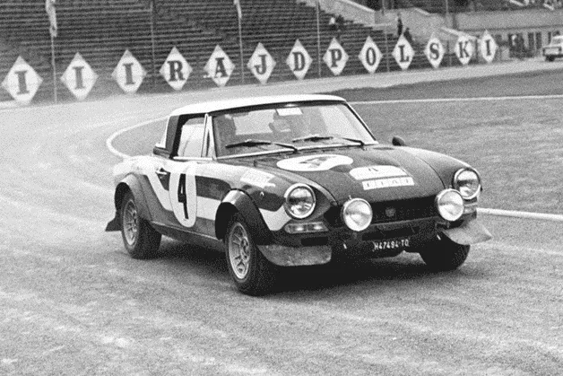
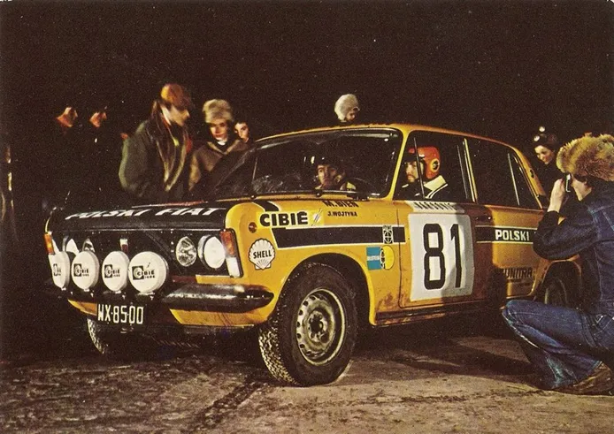

The Catastrophic Rally Poland of 1973
Rally Poland has been a staple of the ERC calendar since it first featured on the calendar in 1960. Since then, Rally Poland has featured in the WRC calendar 5 times, with the most recent one being in 2017.
Thierry Neuville en route to win Rally Poland in 2017
But the rally wasn’t always held around the fast gravel roads in Mikolajki, the area where it is in now. The rally has been held in Krakow, Ziemia kłodzka and Wroklaw in the South of Poland among others, with a variety of roads, as Rally Poland has also been a gravel, tarmac and mixed surface rally! The event was first held in the area it is presently known for in 2005.

Bruno Thiry in a Peugeot 206 WRC finished 2nd in 2003, on tarmac
What many people don’t know, is that the 2014 edition of the rally wasn’t actually the first time Poland held a rally in the World Rally Championship. Yes !, Poland actually featured on the calendar for the inaugural WRC season, all the way back in 1973, a whole 50 years ago. Back then there was no driver’s championship, with only manufacturer’s eligible for scoring points. Alpine dominated in the Alpine A110, with Jean-Luc Therier winning 3 out of the 9 rallies he was entered in, and teammates Bernard Darniche and Jean-Pierre Nicolas (future Peugeot team boss) winning 1 rally each. Poland was Round 7 of the championship with the event based in Krakow with 55 (!) stages covering 650km over gravel. This was the only time a country of the Warsaw Pact would host a rally in the WRC.

Jean Luc Therier in his Alpine 110 in one of the many road sections
So, on Thursday afternoon, the 67 entered crews took the ceremonial start in the city of Krakow.
Only 3 would make it to the end on Sunday.
Huh? What? I know what you are thinking, how is this possible? We have had rallies that have had even less finishers, famously Rally Bandama in 1972 had no finishers. But since Rally Poland didn’t have a 3800km itinerary and as far as I know, it also had a distinct lack of cannibal tribes unlike Bandama, how did only 3 crews (a record that still stands today in the WRC) make it to the finish? Well, the problem was that the Polish organizers had a very serious lapse of judgement while making the itinerary of the rally. They set many Time Controls along the road sections, with impossible deadlines. Meaning every driver would arrive to one later and then later and then later… you get the idea. What also didn’t help is that the roadbook that was given to the crews was inaccurate, leading many to get lost and subsequently go over the time limit. On top of that, there weren’t enough marshals on the stages, meaning civilian vehicles would find their way into the stages, which as you can imagine isn’t ideal. The situation with the time controls was so bad, that a majority of the drivers were Excluded from the rally for failing to reach the checkpoint on time. And even the 3 drivers that made it to the finish had hefty penalties.

Achim Warmbold won the rally in a Fiat 124 Abarth
Eventual winner Achim Warmbold (co driven by future FIA and Ferrari boss, Jean Todt) had a whopping 1 hour and 36-minute worth of time penalties! The other 2 drivers on the podium were East-German Egon Culmbacher in an Wartburg 353 (the car had a 2-stroke engine) and Maciej Stawowiak in a Polski Fiat 125p, 2 cars that under normal circumstances would not have been near the top 10, nevermind the podium. Maciej Stawowiak’s podium would lead to a funny predicament, as Polski Fiat beat Lancia in the manufacturer’s that season, which is very funny to me (I should mention Lancia only took part in 4 rallies that season and they were more focused on the ERC, but it’s still a very funny stat).

A Polski Fiat 125p in Monte Carlo 1973
As
you can imagine, this rather farcical event wasn’t pleasant for the FIA, and
the event was subsequently dropped for the 1974 season. But the event’s
catastrophic organization would continue, with rally leader Sobieslaw Zasada
(yes the 90 y/o from Safari 2021) crashing into a marshal’s car that was going
the wrong way into the stage, and retiring from the lead.
The event would return on the WRC Calendar in 2009 after 36 years in what I can
only describe as a way better organized rally, that was enjoyed by everyone,
well, apart from Jari Matti Latvala maybe.